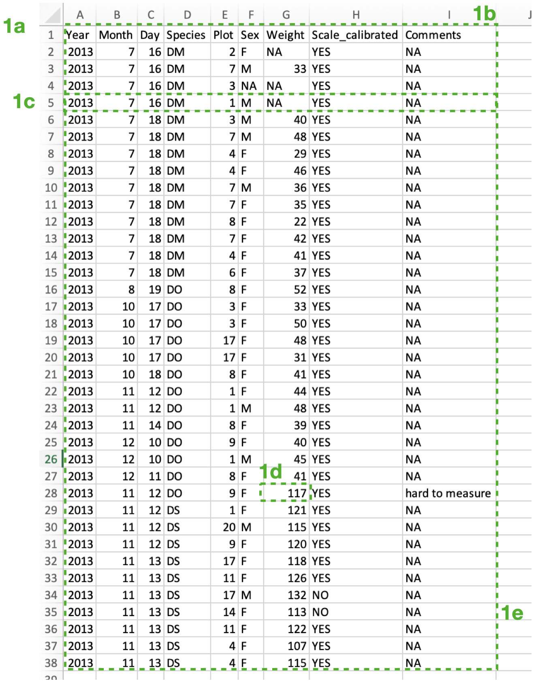
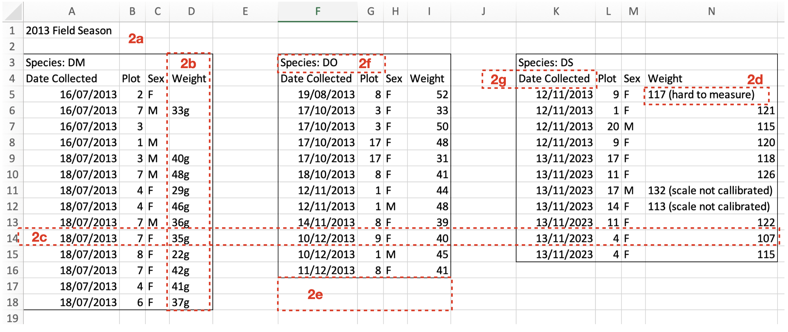
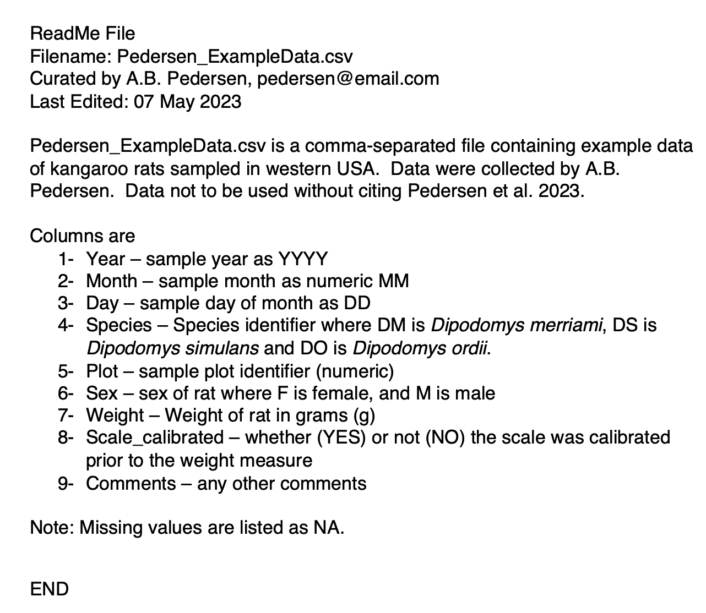

Data Collection & Curation Handbook
CHECK PSB2024
The DSP Program Handbook for Data Collection & Curation
Data curation is the collection and on-going management of data.
Good data curation helps maintain data quality, and allows you and others to discover, access, and re-use your data. Data curation skills then are essential for ethical, transparent and reproducible science, and are an important part of your contribution to the field of biology.
Experimental design
The usefulness and value of the data you are collecting are only as good as your experimental design. [more TBA]
Data collection
The individual needs of your project will vary, but here we will present a standard way of structuring your data and data collection that will support robust and ethical research. Specifically we will cover:
- Choosing what you record
- Choosing how you record it
- Naming your columns and data files
- Including a “ReadMe” document
- Asking questions
- Backing up your data
A note on tools: You will most likely be collecting your data in a spreadsheet editor like Excel1, but these guidelines are generally applicable for however you are collecting your data.
Choosing what you record
You should be recording the conditions along with your observations. You should also include comments made during the data collection noting unusual conditions (e.g. weather) that might affect your observations (as a comments column). When in doubt record, record, record.
Choosing how you record it
Best practices is to record your data in “unique record format”2. Unique record format makes it easier to track how you have collected the data, it makes it easier for two or more researchers to collaborate on the data collection, and it reduces the chance of errors in your data collection.
Recording your data in unique record format means that:
every column is a variable of one format (either numeric or character),
every row is an observation,
every cell holds only one piece of information (i.e. a single value), and
you record your data in a rectangular table: this means that all columns have the same number of rows. If needed, you can fill missing information with a value to show it is missing (e.g. using
NAwhich is what R uses to indicate a missing value)
In addition - you should make sure there is no extra white space (e.g. blank rows) above or to the left of your data.
it is most flexible to record dates as separate columns for year, month and day, and, similarly, record times as separate columns of hours and minutes. The handbook goes over analysis with complicated dates columns [link TBA], but having separate columns for each variable is easiest.
record a decimal using “.” not “,” as this will be most consistent for the data analysis tools we will be using. Again, there are ways of working around this in R if your data does use commas as decimals.
Naming your columns
Make your variable (column) names simple but informative.
Avoid spaces in your column names - instead you can include multiple words in your column names by using “snake_case” (e.g. total_length). Avoid having units in your column names (link to readme file)
Naming your data files
Include a useful name for your data file that describes the type of data in the file and the project or person related to the project, e.g. “ChristensenMSc_EnviroData.csv”
Note that you will likely record your data in a spreadsheet editor resulting in a file with e.g. .xlsx extension. That said, you may want to save your data file as a plain text file (e.g. with .txt or .csv extension). This is because a plain text file is the most “portable” both across platforms (e.g. Windows vs. Mac) and into the future. Also, this format avoids Excel reformatting data columns that can cause confusion with interpretation. You can change how your file is saved using “Save as” in the file menu.
Here’s an example of good data collection practice (i.e. unique record format) - it’s a file called Pedersen_ExampleData.csv:

Note that:
1a) There is no white space above or to the left of the data.
1b) Every column is a variable that is either a numeric or a character.
1c) Each row is a unique observation.
1d) Each cell holds only a single piece of information.
1e) The data are recorded in a regular table (no missing rows or columns).
In contrast, here is an example of what NOT to do:

Note in this bad-practice example:
2a) There is white space above the data.
2b) Some columns contain a mix of numeric and character data. Note that you it is better to give information on units (e.g. g) in the ReadMe file (see next section).
2c) Rows contain more than one observation.
2d) Some cells hold more than one piece of information.
2e) The data are not recorded in a regular table (there are missing rows and columns).
2f) A variable is not in its own column.
2g) A column name contains white space.
Include a “ReadMe” document
For each data file, include a separate “ReadMe” document that describes the data. The ReadMe file documents (briefly) what the data are and where they came from. The document allows you to communicate your data to your colleagues and your future self.
This document should:
- be a plain text or pdf document.
- include the name of the data file associated with the ReadMe document.
- include a description of where the data came from.
- include information on how the data can or can not be reused.
- include a contact person for the data and their contact details (e.g. email).
- include descriptions of each column, the type of data and the format of the data, including units.
- include a description of how missing values are recorded (e.g.
NA).
Here is an example of a ReadMe document to accompany the Pedersen_ExampleData.csv above:

Asking questions
Remember to ask questions! Asking your questions is one of the most valuable contributions you can make to science. Asking your questions will help us clarify methods, develop better strategies and stop accidents before they happen.
If you’re unsure how to do something - stop and ask!
If you’re unsure why you should do something - stop and ask!
If something doesn’t feel safe or comfortable - stop and ask!
Backing up your data
Where to store your data [TBA]
Where to go from here:
For more ideas on best practices regarding data curation, try:
Wickham, H. . (2014). Tidy Data. Journal of Statistical Software, 59(10), 1–23. https://doi.org/10.18637/jss.v059.i10